This document will guide you through some data analysis tasks with a focus on fitting tree-based models and training them. We’ll also (re)-visit some other topics.
While this is in some sense a stand-alone analysis, I assume that you have worked through the Data Analysis exercise and are familiar with the dataset and all the things we discovered during the cleaning process. We’ll use the same dataset here but focus on a different outcome. Other than that, the way to work through the exercise is like in the Data Analysis exercise, namely by writing/completing the missing code.
We need a variety of different packages, which are loaded here. Install as needed. For this analysis, we’ll again use the caret package. If you use others, load them here.
We will again use the Norovirus dataset.
For this analysis, we consider as our main outcome of interest the season. This is a categorical outcome with more than 2 categories, something we haven’t looked at before. Because it’s more than 2 categories, a basic logistic model won’t work. Fortunately, tree-based models can deal with multiple categories.
##
## Fall Spring Summer Winter
## 67 164 222 126 443We already knew from previous explorations that some entries do not have a season. We could either code them as “other” and keep them in the model, or remove them. Since it’s hard to see any potential scientific reason why there should be a correlation between an “other” season and some variable, we’ll remove it here.
We also notice that while winter is dominant (makes sense, we know that norovirus is more common in winter), we got a decent number of outbreaks for each season, so we shouldn’t have a problem with (un)balanced data.
#write code that removes all observations that have an empty/missing value for season
#then drop the empty level and check that you have 4 categories for season left
d <- data_raw %>%
filter(season != "") %>%
droplevels()
table(d$season)##
## Fall Spring Summer Winter
## 164 222 126 443We will pick similar variables as previously, but with some changes. Keep the following variables: Action1, CasesAll, Country, Deaths, EndMonth, GG2C4, Hemisphere, Hospitalizations, MeanD1, MeanI1, MedianD1, MedianI1, OBYear, Path1, RateAll, RiskAll, Season, Setting, StartMonth, State, Trans1, Vomit.
We’ll have to perform the usual cleaning steps. You might have realized by now that even for the same dataset, cleaning steps can differ based on the outcome (and as you see below, the model).
Let’s first check for missing values.
## Action1 CasesAll Country Deaths
## 0 5 0 42
## EndMonth gg2c4 Hemisphere Hospitalizations
## 0 0 0 42
## MeanD1 MeanI1 MedianD1 MedianI1
## 0 0 0 0
## OBYear Path1 RateAll RiskAll
## 0 0 104 116
## season Setting_1 StartMonth State
## 0 0 0 0
## Trans1 Vomit
## 0 1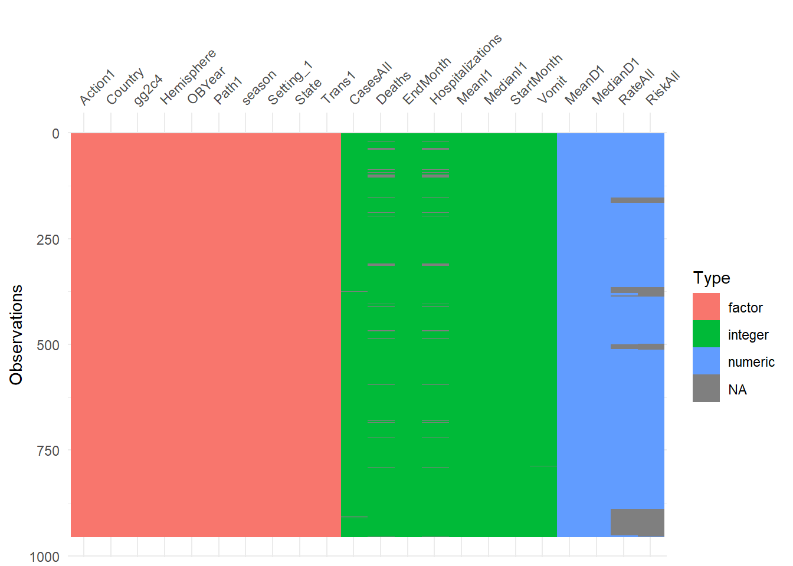
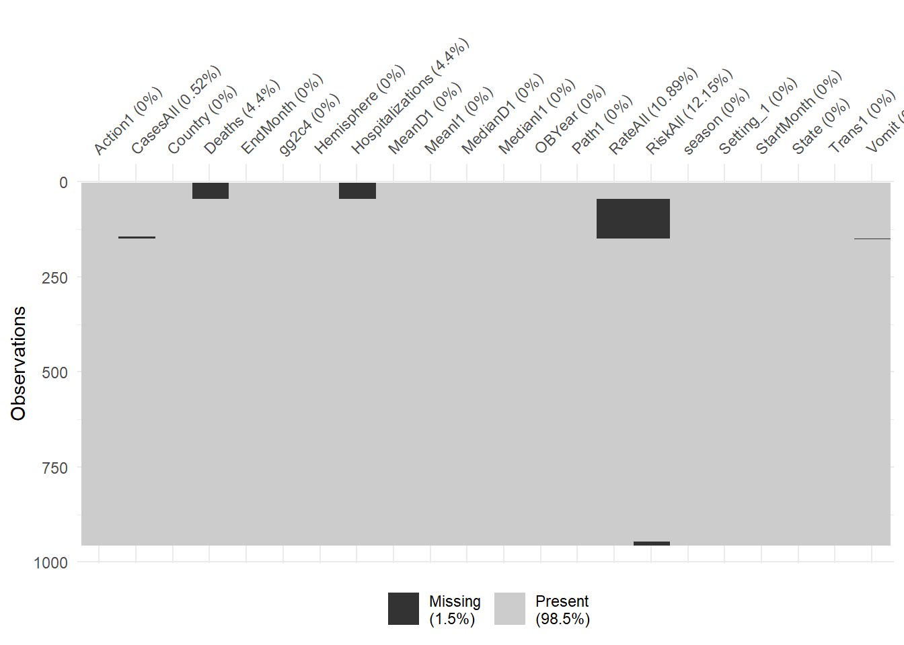
Looks like none of the new variables we included had a ton of missing, so we would probably be ok just removing any observation that has missing data. However, tree-based models can deal with missing data in predictors. Therefore, we’ll keep them for now. We’ll later compare how the model does or does not change if we remove those observations.
Let’s make sure everything has the right format (numeric/integer/factor). Adjust/recode variables as needed. You will likely find that as you convert OBYear to numeric, something doesn’t quite work. Take a look. Fix by removing the observation with the troublesome entry, then convert to numeric. Finally, remove the observations that have 0 as OByear - there are more than 1 now.
#write code that cleans OBYear, convert it to numeric. Remove observations with OBYear = 0.
#also convert any other variables as needed
d2 <- d1 %>%
filter(OBYear != "2002-2007") %>%
mutate(OBYear = unfactor(OBYear)) %>%
filter(OBYear != 0)
table(d2$OBYear)##
## 1983 1990 1992 1993 1994 1995 1996 1997 1998 1999 2000 2001 2002 2003 2004
## 1 1 1 6 15 8 10 37 76 80 59 46 134 91 114
## 2005 2006 2007 2008 2009 2010
## 66 127 33 15 17 16Look at the data to see what else we need to do.
## 'data.frame': 953 obs. of 22 variables:
## $ Action1 : Factor w/ 4 levels "No","Unknown",..: 3 3 3 3 3 3 3 3 3 4 ...
## $ CasesAll : int 15 65 27 4 15 6 40 10 116 45 ...
## $ Country : Factor w/ 21 levels "Australia","Brazil",..: 11 21 16 16 16 16 16 16 16 21 ...
## $ Deaths : int 0 0 0 0 0 0 0 0 0 0 ...
## $ EndMonth : int 12 9 0 0 0 0 0 0 11 11 ...
## $ gg2c4 : Factor w/ 2 levels "","Yes": 2 1 2 1 2 1 1 1 2 1 ...
## $ Hemisphere : Factor w/ 2 levels "Northern","Southern": 1 1 1 1 1 1 1 1 1 1 ...
## $ Hospitalizations: int 0 0 0 0 0 0 0 0 5 10 ...
## $ MeanD1 : num 0 0 0 0 0 0 0 0 0 0 ...
## $ MeanI1 : int 0 0 0 0 0 0 0 0 0 0 ...
## $ MedianD1 : num 0 36 0 0 0 0 0 0 0 48 ...
## $ MedianI1 : int 0 37 0 0 0 0 0 0 0 31 ...
## $ OBYear : num 1999 1998 2006 2006 2006 ...
## $ Path1 : Factor w/ 4 levels "No","Unknown",..: 1 1 3 3 3 3 3 3 1 3 ...
## $ RateAll : num 0 39.8 20.8 100 60 ...
## $ RiskAll : num 0 108 130 4 25 ...
## $ season : Factor w/ 4 levels "Fall","Spring",..: 1 1 1 1 1 1 1 1 1 1 ...
## $ Setting_1 : Factor w/ 374 levels "\tPsychiatric Care Center adjoined",..: 118 32 39 301 39 341 39 301 196 3 ...
## $ StartMonth : int 11 9 9 10 11 11 11 11 11 11 ...
## $ State : Factor w/ 36 levels "0","1","14 states: CA, UT, KS, WI, IL, IN, OH, GA, FL, NC, VA, WV, NY, PA,",..: 1 21 1 1 1 1 1 1 1 9 ...
## $ Trans1 : Factor w/ 6 levels "Environmental",..: 5 2 2 2 2 2 2 2 5 2 ...
## $ Vomit : int 1 1 1 1 1 1 1 1 1 1 ...## Action1 CasesAll Country Deaths
## No : 1 Min. : 1 Other :397 Min. :0.00000
## Unknown : 1 1st Qu.: 9 Japan :371 1st Qu.:0.00000
## Unspecified:742 Median : 25 USA :106 Median :0.00000
## Yes :209 Mean : 129 Australia: 21 Mean :0.05379
## 3rd Qu.: 64 Multiple : 17 3rd Qu.:0.00000
## Max. :32150 Denmark : 11 Max. :9.00000
## NA's :5 (Other) : 30 NA's :42
## EndMonth gg2c4 Hemisphere Hospitalizations
## Min. : 0.000 :676 Northern:872 Min. : 0.0000
## 1st Qu.: 0.000 Yes:277 Southern: 81 1st Qu.: 0.0000
## Median : 0.000 Median : 0.0000
## Mean : 2.559 Mean : 0.7113
## 3rd Qu.: 4.000 3rd Qu.: 0.0000
## Max. :12.000 Max. :125.0000
## NA's :42
## MeanD1 MeanI1 MedianD1 MedianI1
## Min. : 0.000 Min. : 0.0000 Min. : 0.000 Min. : 0.000
## 1st Qu.: 0.000 1st Qu.: 0.0000 1st Qu.: 0.000 1st Qu.: 0.000
## Median : 0.000 Median : 0.0000 Median : 0.000 Median : 0.000
## Mean : 1.558 Mean : 0.7125 Mean : 2.611 Mean : 1.703
## 3rd Qu.: 0.000 3rd Qu.: 0.0000 3rd Qu.: 0.000 3rd Qu.: 0.000
## Max. :273.600 Max. :48.0000 Max. :235.200 Max. :65.000
##
## OBYear Path1 RateAll RiskAll
## Min. :1983 No :197 Min. : 0.00 Min. : 0.0
## 1st Qu.:2000 Unknown : 3 1st Qu.: 0.00 1st Qu.: 0.0
## Median :2003 Unspecified:675 Median : 16.50 Median : 20.5
## Mean :2002 Yes : 78 Mean : 27.04 Mean : 399.7
## 3rd Qu.:2005 3rd Qu.: 49.00 3rd Qu.: 110.8
## Max. :2010 Max. :105.00 Max. :35000.0
## NA's :103 NA's :115
## season Setting_1 StartMonth State
## Fall :164 Restaurant :104 Min. : 0.000 0 :842
## Spring:222 0 : 85 1st Qu.: 2.000 NC : 18
## Summer:125 restaurant : 70 Median : 5.000 NY : 10
## Winter:442 Hospital : 39 Mean : 5.894 AK : 9
## Hotel : 25 3rd Qu.:10.000 FL : 7
## Nursing Care Center: 25 Max. :12.000 MI : 6
## (Other) :605 (Other): 61
## Trans1 Vomit
## Environmental : 11 Min. :0.0000
## Foodborne :373 1st Qu.:0.0000
## Person to Person:150 Median :1.0000
## Unknown : 63 Mean :0.5074
## Unspecified :284 3rd Qu.:1.0000
## Waterborne : 72 Max. :1.0000
## NA's :1Some issues we noted previously: We need to remove the Unspecified entry in Hemisphere and recode Action1 and Path1 as described in the Data Analysis exercise, i.e., from Unknown to Unspecified. Also, we want to group the Setting_1 variable into just Restaurant and Other. Again, remember that there are restaurant and Restaurant values, so you need to fix that too.
We’ll also recode the gg2c4 blank entries to “No”. We further note that Action1 has a single No entry. Let’s remove that observation to prevent potential problems during cross-validation.
Let’s also lump country together, make 3 categories, Japan, USA, and Other.
As discussed previously, it makes sense to move the Waterborne to the Environmental in the Trans1 variable. It also turns out that most outbreaks have no information for state, so best to drop the State variable.
Finally, move the outcome into the first column.
# write code that performs the actions described above
# at the end, use the droplevels() command to remove empty factor levels
strings <- c('Restaurant', 'restaurant', 'Restaruant')
d3 <- d2 %>%
# Recoding the Setting_1 variable
mutate(set3 = as.character(Setting_1)) %>%
mutate(Setting = ifelse(str_detect(set3, paste(strings, collapse = "|")), 'Restaurant','Others')) %>%
mutate(Setting= factor(Setting)) %>%
select(-c(Setting_1, set3)) %>%
# remove obs when Hemisphere is unspecified
filter(Hemisphere != "Unspecified") %>%
# recode the factor level for Action1 and Path1
mutate(Action1 = fct_collapse(Action1, Unspecified = c("Unknown","Unspecified")),
Path1 = fct_collapse(Path1, Unspecified = c("Unknown","Unspecified"))) %>%
# remove obs with Action1 is No
filter(Action1 != 'No') %>%
# recode the factor levels for country and Trans1
mutate(Country =fct_lump(Country, n=3),
Trans1=fct_collapse(Trans1,Environmental=c('Environmental','Waterborne')), Vomit=factor(Vomit)) %>%
mutate(gg2c4= ifelse(gg2c4=='Yes','Yes','No')) %>%
mutate(gg2c4 = factor(gg2c4)) %>%
select(-c(State)) %>%
droplevels() %>%
select(season, everything())
# double check to see the changes made
table1(~ Action1+Country+Hemisphere+Path1+Trans1+gg2c4+Setting, data=d3)| Overall (n=952) |
|
|---|---|
| Action1 | |
| Unspecified | 743 (78.0%) |
| Yes | 209 (22.0%) |
| Country | |
| Japan | 371 (39.0%) |
| USA | 106 (11.1%) |
| Other | 475 (49.9%) |
| Hemisphere | |
| Northern | 872 (91.6%) |
| Southern | 80 (8.4%) |
| Path1 | |
| No | 197 (20.7%) |
| Unspecified | 677 (71.1%) |
| Yes | 78 (8.2%) |
| Trans1 | |
| Environmental | 83 (8.7%) |
| Foodborne | 373 (39.2%) |
| Person to Person | 150 (15.8%) |
| Unknown | 63 (6.6%) |
| Unspecified | 283 (29.7%) |
| gg2c4 | |
| No | 676 (71.0%) |
| Yes | 276 (29.0%) |
| Setting | |
| Others | 764 (80.3%) |
| Restaurant | 188 (19.7%) |
## season Action1 CasesAll Country Deaths EndMonth gg2c4 Hemisphere
## 1 Fall Unspecified 15 Japan 0 12 Yes Northern
## 2 Fall Unspecified 65 USA 0 9 No Northern
## 3 Fall Unspecified 27 Other 0 0 Yes Northern
## 4 Fall Unspecified 4 Other 0 0 No Northern
## 5 Fall Unspecified 15 Other 0 0 Yes Northern
## 6 Fall Unspecified 6 Other 0 0 No Northern
## Hospitalizations MeanD1 MeanI1 MedianD1 MedianI1 OBYear Path1
## 1 0 0 0 0 0 1999 No
## 2 0 0 0 36 37 1998 No
## 3 0 0 0 0 0 2006 Unspecified
## 4 0 0 0 0 0 2006 Unspecified
## 5 0 0 0 0 0 2006 Unspecified
## 6 0 0 0 0 0 2006 Unspecified
## RateAll RiskAll StartMonth Trans1 Vomit Setting
## 1 0.00000 0 11 Unspecified 1 Others
## 2 39.81481 108 9 Foodborne 1 Others
## 3 20.76923 130 9 Foodborne 1 Others
## 4 100.00000 4 10 Foodborne 1 Restaurant
## 5 60.00000 25 11 Foodborne 1 Others
## 6 75.00000 8 11 Foodborne 1 RestaurantWe know our data fairly well by now, so we might not discover much new in any plots, but it’s always good to do them anyway. Let’s create a few plots showing the outcome and the predictors. We’ll start with the continuous predictors. I suggest scatter/box/violin plots with the outcome on the x-axis.
#write code that produces plots showing our outcome of interest on the x-axis and each numeric predictor on the y-axis.
#you can use the facet_wrap functionality in ggplot for it, or do it some other way.
season <- d3$season
p1 <- d3 %>% select_if(is.numeric) %>% cbind(season)
p1 %>%
gather(-season,key = "var", value = "value") %>%
ggplot() + geom_boxplot(aes(x = season, y=value)) +
facet_wrap(~ var, scales = "free") + theme_bw()## Warning: Removed 305 rows containing non-finite values (stat_boxplot).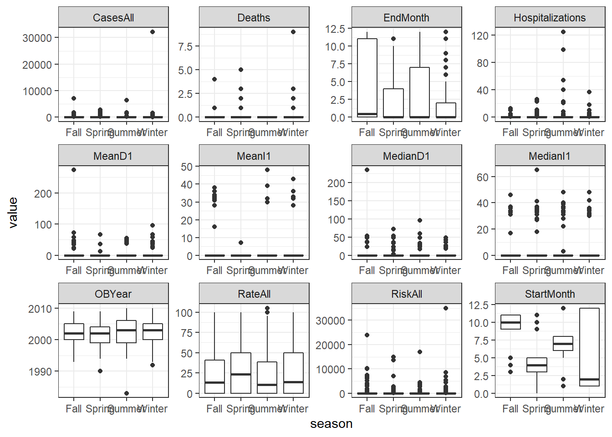
Things look ok, apart from the skew in the predictors we discussed previously.
Next, let’s create plots for the categorical variables. You can use, for instance, geom_count for it, or some other representation. If you prefer lots of tables, that’s ok too.
#write code that produces plots or tables showing our outcome of interest and each categorical predictor.
p2 <- d3 %>% select_if(is.factor)
p3 <- p2 %>% gather(-season, key="var", value="value")## Warning: attributes are not identical across measure variables;
## they will be droppedp3 %>% ggplot(aes(x=season, y=value)) + geom_count() +
facet_wrap( ~var, scales = "free") +theme_bw()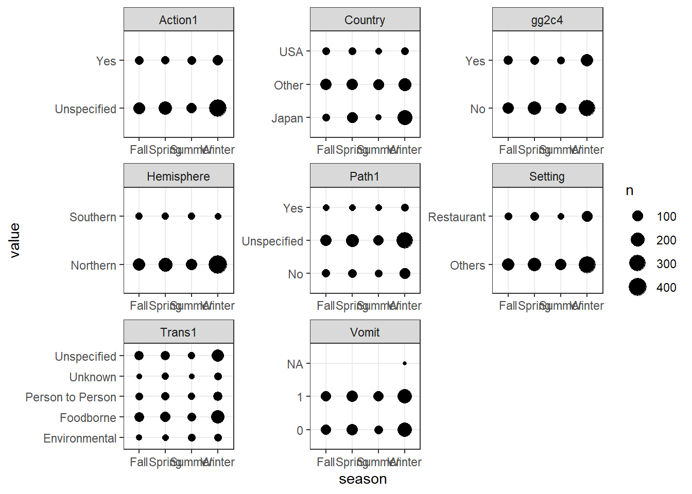
| Overall (n=952) |
|
|---|---|
| season | |
| Fall | 164 (17.2%) |
| Spring | 222 (23.3%) |
| Summer | 125 (13.1%) |
| Winter | 441 (46.3%) |
| Action1 | |
| Unspecified | 743 (78.0%) |
| Yes | 209 (22.0%) |
| Country | |
| Japan | 371 (39.0%) |
| USA | 106 (11.1%) |
| Other | 475 (49.9%) |
| gg2c4 | |
| No | 676 (71.0%) |
| Yes | 276 (29.0%) |
| Hemisphere | |
| Northern | 872 (91.6%) |
| Southern | 80 (8.4%) |
| Path1 | |
| No | 197 (20.7%) |
| Unspecified | 677 (71.1%) |
| Yes | 78 (8.2%) |
| Trans1 | |
| Environmental | 83 (8.7%) |
| Foodborne | 373 (39.2%) |
| Person to Person | 150 (15.8%) |
| Unknown | 63 (6.6%) |
| Unspecified | 283 (29.7%) |
| Vomit | |
| 0 | 469 (49.3%) |
| 1 | 482 (50.6%) |
| Missing | 1 (0.1%) |
| Setting | |
| Others | 764 (80.3%) |
| Restaurant | 188 (19.7%) |
Looks ok. Notice the NA for vomiting. We are ok with that for now.
## [1] 952 21## 'data.frame': 952 obs. of 21 variables:
## $ season : Factor w/ 4 levels "Fall","Spring",..: 1 1 1 1 1 1 1 1 1 1 ...
## $ Action1 : Factor w/ 2 levels "Unspecified",..: 1 1 1 1 1 1 1 1 1 2 ...
## $ CasesAll : int 15 65 27 4 15 6 40 10 116 45 ...
## $ Country : Factor w/ 3 levels "Japan","USA",..: 1 2 3 3 3 3 3 3 3 2 ...
## $ Deaths : int 0 0 0 0 0 0 0 0 0 0 ...
## $ EndMonth : int 12 9 0 0 0 0 0 0 11 11 ...
## $ gg2c4 : Factor w/ 2 levels "No","Yes": 2 1 2 1 2 1 1 1 2 1 ...
## $ Hemisphere : Factor w/ 2 levels "Northern","Southern": 1 1 1 1 1 1 1 1 1 1 ...
## $ Hospitalizations: int 0 0 0 0 0 0 0 0 5 10 ...
## $ MeanD1 : num 0 0 0 0 0 0 0 0 0 0 ...
## $ MeanI1 : int 0 0 0 0 0 0 0 0 0 0 ...
## $ MedianD1 : num 0 36 0 0 0 0 0 0 0 48 ...
## $ MedianI1 : int 0 37 0 0 0 0 0 0 0 31 ...
## $ OBYear : num 1999 1998 2006 2006 2006 ...
## $ Path1 : Factor w/ 3 levels "No","Unspecified",..: 1 1 2 2 2 2 2 2 1 2 ...
## $ RateAll : num 0 39.8 20.8 100 60 ...
## $ RiskAll : num 0 108 130 4 25 ...
## $ StartMonth : int 11 9 9 10 11 11 11 11 11 11 ...
## $ Trans1 : Factor w/ 5 levels "Environmental",..: 5 2 2 2 2 2 2 2 5 2 ...
## $ Vomit : Factor w/ 2 levels "0","1": 2 2 2 2 2 2 2 2 2 2 ...
## $ Setting : Factor w/ 2 levels "Others","Restaurant": 1 1 1 2 1 2 1 2 1 1 ...At this step, you should have a dataframe containing 952 observations, and 21 variables: 1 outcome, 12 numeric/integer predictors, and 8 factor variables. All variables should have values that are ready for analysis. The outcome should be in the 1st slot.
Let’s do data splitting again. Use caret functions (or any other way you like) to split the data into 70/30 train/test portions.
Similar to mlr, caret allows you to use multiple processors at the same time. It is easy to set up, and the few lines below do the trick.
We’ll now explore fitting and training several tree-based models. We’ll also explore how including/excluding missing values and centering/scaling or not might affect the results.
To define a null model, we need to determine what performance measure we want to track. Since we now have a categorical outcome with more than 2 categories, the regular 2x2 table/confusion matrix, and measurements that rely on it don’t quite work, though many of them have versions that go beyond the 2x2 table. To keep things simple, we will use accuracy, which is simply the fraction of correct predictions. It is easy to compute, no matter how many categories we have. The null model still predicts the most frequent category. We can use that as baseline performance.
#write code that computes accuracy for a null model that always predicts the most common category
null <- rep("Winter", nrow(d3))
measureACC(null, d3$season)## [1] 0.4632353You should find that the null model has an accuracy of around 0.46.
Now let’s consider single predictor models, i.e., we’ll fit the outcome to each predictor one at a time to get an idea of the importance of individual predictors. Here, our model will be a tree. I’m actually not so sure if this makes a lot of sense since a “tree” with only one predictor seems a bit silly. But I guess we can try. It’s similar to a 1-predictor GLM.
We’ll also do some parameter tuning here. Looking at the caret documentation, we find that the tuning parameter for the rpart model (which is the tree algorithm) is called cp. We could also find that using modelLookup("rpart"). We could either specify a grid of values to try for cp (we’ll use a grid below), or, for a single tuning parameter, caret allows one to set the number of values to try and picks those values automatically. We’ll do the latter approach here.
#There is probably a nicer tidyverse way of doing this. I just couldn't think of it, so did it this way.
set.seed(1111) #makes each code block reproducible
outcomename = "season"
fitControl <- trainControl(method="repeatedcv",number=5,repeats=5) #setting CV method for caret
Npred <- ncol(data_train)-1 # number of predictors
resultmat <- data.frame(Variable = names(data_train)[-1], Accuracy = rep(0,Npred)) #store performance for each variable
for (n in 2:ncol(data_train)) #loop over each predictor. For this to work, outcome must be in 1st column
{
fit1 <- caret::train( as.formula(paste(outcomename, "~",names(data_train)[n])) , data = data_train, method = "rpart", trControl = fitControl, na.action = na.pass, tuneLength = 10)
resultmat[n-1,2]= max(fit1$results$Accuracy)
}
print(resultmat)## Variable Accuracy
## 1 Action1 0.4625783
## 2 CasesAll 0.4371258
## 3 Country 0.4523908
## 4 Deaths 0.4625782
## 5 EndMonth 0.6078051
## 6 gg2c4 0.4625783
## 7 Hemisphere 0.4562893
## 8 Hospitalizations 0.4607826
## 9 MeanD1 0.4631575
## 10 MeanI1 0.4649637
## 11 MedianD1 0.4577710
## 12 MedianI1 0.4548254
## 13 OBYear 0.4787562
## 14 Path1 0.4625805
## 15 RateAll 0.4574609
## 16 RiskAll 0.4661742
## 17 StartMonth 0.8921997
## 18 Trans1 0.4556872
## 19 Vomit 0.4625847
## 20 Setting 0.4625804So it looks like most of the single predictor models don’t have accuracy much better than the null. 2 exceptions are StartMonth and EndMonth. Well, we would expect that the outbreak season and the month at which the outbreak started (and ended) have a strong correlation. I kept those variables here to see if that would happen and get some reassurance that our model works ok. Of course, in a real analysis, keeping those seems silly, we wouldn’t learn much from it (other than data entry appeared to have been done ok).
Anyway, now let’s fit a tree to the full model with all predictors.
set.seed(1111) #makes each code block reproducible
fitControl <- trainControl(method="repeatedcv",number=5,repeats=5)
fit1 = caret::train(season ~ ., data=data_train, method="rpart", trControl = fitControl, na.action = na.pass, tuneLength = 10)
print(fit1$results)## cp Accuracy Kappa AccuracySD KappaSD
## 1 0.00000000 0.9733450 0.9608083 0.01419000 0.02099063
## 2 0.02135562 0.9727480 0.9598555 0.01463699 0.02178684
## 3 0.04271123 0.9248201 0.8900274 0.02820307 0.04147341
## 4 0.06406685 0.8921723 0.8424778 0.02326732 0.03397198
## 5 0.08542247 0.8921723 0.8424778 0.02326732 0.03397198
## 6 0.10677809 0.8921723 0.8424778 0.02326732 0.03397198
## 7 0.12813370 0.8921723 0.8424778 0.02326732 0.03397198
## 8 0.14948932 0.8921723 0.8424778 0.02326732 0.03397198
## 9 0.17084494 0.8921723 0.8424778 0.02326732 0.03397198
## 10 0.19220056 0.6630268 0.4042284 0.19975184 0.40034135This printout shows us model performance for different values of the tuning parameter, cp. It seems for a high cp, we get a close to perfect model. Let’s take a look at this model. We could use the regular plot function, but the resulting tree looks ugly. The prp function from the rpart.plot package makes a much nicer tree (other packages to plot nice trees exist).
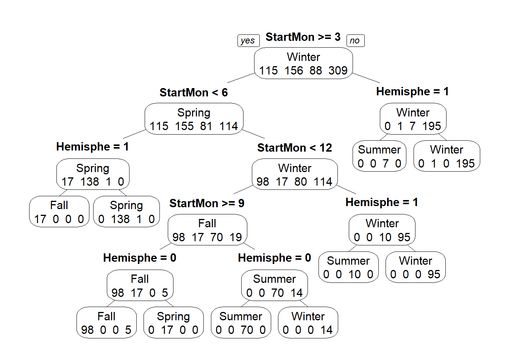
ww=17.8/2.54; wh=ww; #for saving plot
dev.print(device=png,width=ww,height=wh,units="in",res=600,file="rparttree.png") #save tree to file## png
## 2So the model splits on month, repeatedly. And it also splits on the hemisphere, which makes sense since the seasons are switched in the Southern hemisphere. This is also likely the reason why the model with month only didn’t produce a perfect fit. It could get one hemisphere right, but not both. With both bits of information, we can get almost perfect predictions.
Note two distinguishing features of this tree model: Even though we fed the algorithm the full model including all predictor variables, some - in fact, almost all - of them are not part of the final model. This is a good illustration of the feature/variable selection property that a tree does automatically. If it doesn’t find a certain predictor variable useful, it leaves it out.
Also, note that some predictor variables are used more than once. In fact, in this example, only 2 variables are used, and they are used repeatedly.
You can also see on each node the predictions for each outcome category at that step. It is always possible to build a tree that predicts perfectly, but that would lead to overfitting. That’s why we use cross-validation and tuning of the cp parameter, which reduces the risk of overfitting.
Finally, note that by default, levels are ordered alphabetically (Fall/Spring/Summer/Winter). We could re-order the factor manually in the more logical Spring/Summer/Fall/Winter order. I would do that for a ‘real’ analysis where I want to show a nice final result, but here we can leave it as is, as long as we pay attention to this fact.
So the above produces an almost perfect fit, and thus more powerful models are not really needed. However, using start (and end) month information seems a bit like cheating. Of course, if we give the model that kind of information, it will do well. Let’s make it harder and remove those 2 variables from both the training and test sets.
Also, further below, I had problems fitting some of the models, the NA caused problems. The issue often is that while the underlying algorithm can handle the missing values (as you saw above), when using wrappers like caret, things break down. I could either skip caret and try to access the different models directly. For now, I decided to go the other route and drop the data with the missing values. To be able to compare the different models below, I’m dropping those NA observations here. Since the data changed, we also need to re-do the null model computation to be able to compare properly.
#write code that removes StartMonth and EndMonth from both training and test sets
# then drop all observations with missing values in both trian and test sets
data_test1 <- data_test %>% select(-c(StartMonth, EndMonth)) %>%
drop_na()
data_train1 <- data_train %>% select(-c(StartMonth, EndMonth)) %>%
drop_na()
# copy and paste the code from above that computes performance of a null model
null_1 <- rep("Winter", nrow(data_train1))
measureACC(null_1, data_train1$season)## [1] 0.4594595You should find a very similar null-model accuracy, around 0.46.
Now, let’s re-do the fit above fitting a single tree. I’ll increase the tuneLength value a bit so the algorithm can try a few more parameter values.
#copy and paste the code from above that fits the single tree. set tuneLength to 20.
set.seed(1111) #makes each code block reproducible
fitControl <- trainControl(method="repeatedcv",number=5,repeats=5)
fit1 = caret::train(season ~ ., data=data_train1, method="rpart", trControl = fitControl, na.action = na.pass, tuneLength = 20)
print(fit1$results)## cp Accuracy Kappa AccuracySD KappaSD
## 1 0.000000000 0.4032447 0.10177258 0.041303906 0.04943246
## 2 0.001111111 0.4046733 0.10321890 0.039581294 0.04839754
## 3 0.002222222 0.4114946 0.10850598 0.043487145 0.05399774
## 4 0.003333333 0.4147643 0.11135985 0.043181556 0.05429909
## 5 0.004444444 0.4262870 0.11336398 0.051380613 0.06736817
## 6 0.005555556 0.4317022 0.11755598 0.051139509 0.06462923
## 7 0.006666667 0.4396270 0.12176007 0.051667794 0.06026214
## 8 0.007777778 0.4399842 0.12008785 0.050906264 0.06052192
## 9 0.008888889 0.4465234 0.11599739 0.047185923 0.05756015
## 10 0.010000000 0.4501401 0.11811836 0.049527798 0.05953667
## 11 0.011111111 0.4580816 0.11937927 0.047714289 0.05811014
## 12 0.012222222 0.4577375 0.10963520 0.047840251 0.06025071
## 13 0.013333333 0.4645878 0.09738409 0.032862455 0.06182462
## 14 0.014444444 0.4678310 0.09172884 0.026320628 0.06288125
## 15 0.015555556 0.4671265 0.06765252 0.023924246 0.06295119
## 16 0.016666667 0.4653083 0.06190639 0.020872963 0.06012611
## 17 0.017777778 0.4638701 0.05595835 0.020339676 0.05869470
## 18 0.018888889 0.4616748 0.04063065 0.016240474 0.04933952
## 19 0.020000000 0.4609444 0.03263836 0.011957108 0.04688284
## 20 0.021111111 0.4630905 0.02962767 0.009824699 0.04587217# look at model performance for different cp values. Also plot the tree.
prp(fit1$finalModel, extra = 1, type = 1)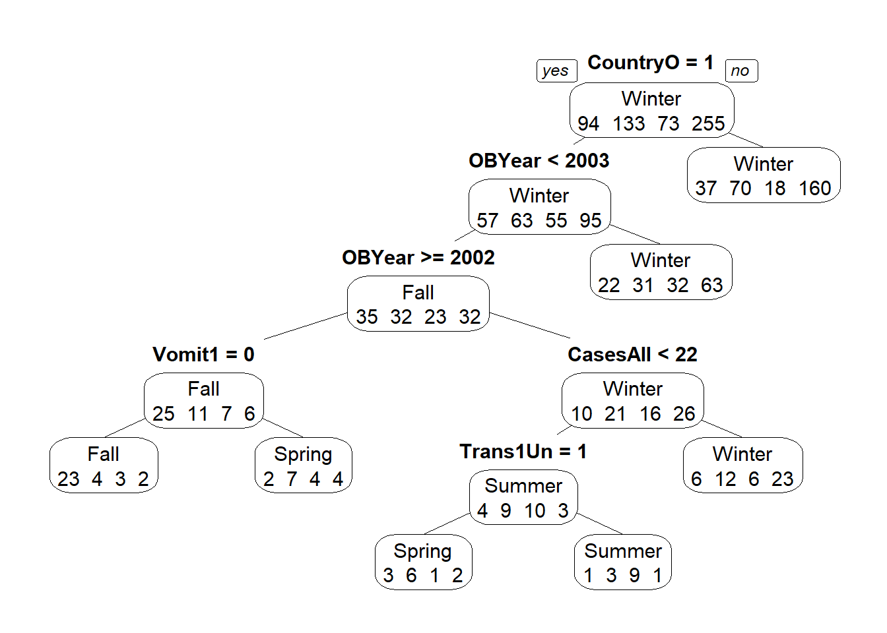
With those variables removed, the tree model doesn’t perform very well. Accuracy is similar to the null model. You can see that in the tree figure, the final nodes (leaves) show a lot of mis-predictions. Note again that only a few variables are used to build the tree, and OBYear shows up more than once.
Let’s see if we can get improved performance with more complicated models. That is, of course, not guaranteed. If there is no “signal” in the data, it doesn’t matter how complicated the model is. We won’t get anything predictive.
Let’s try a random forest. We’ll use the ranger algorithm for this (it’s generally faster than the rf algorithm). This model has parameters that can and should be tuned. To do the tuning, we set up a grid of parameters and search over that grid. More efficient ways exist, e.g., doing an optimization using something like a genetic algorithm. The mlr package allows you to do that, caret doesn’t have those features out of the box, you would need to write your own code for that.
Note that running the code below (and several models that follow) might take a few seconds or minutes, depending on the speed of your computer.
set.seed(1111) #makes each code block reproducible
tuning_grid <- expand.grid( .mtry = seq(1,7,by=1), .splitrule = "gini", .min.node.size = seq(2,8,by=1) )
fit2 = caret::train(season ~ ., data=data_train1, method="ranger", trControl = fitControl, tuneGrid = tuning_grid, na.action = na.pass) We can’t plot a nice final tree anymore since the model is now a combination of trees. We can look at a plot of model performance as a function of the model tuning parameters.
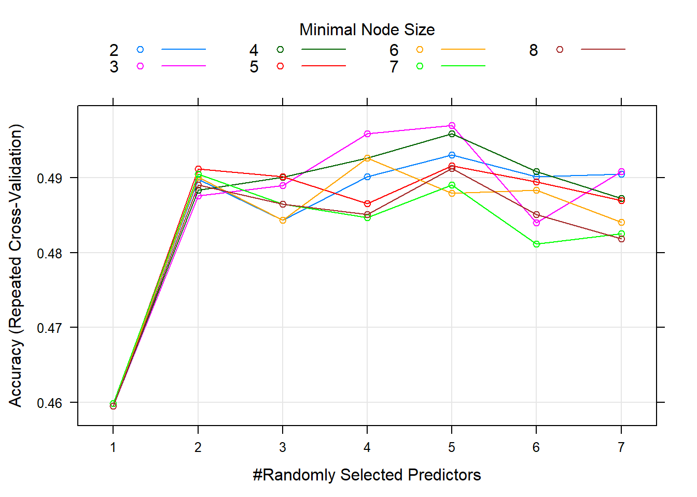
This plot suggests that for around 4 randomly selected parameters and a minimum node size of 6, we get the best model. Note that there isn’t much difference in model performance for several different values of the tuning parameters, and the overall model isn’t that great either, an accuracy just shy of 0.5.
Let’s now try a boosted regression tree ensemble. This method also has several parameters that need tuning, which are specified in gbmGrid.
gbmGrid <- expand.grid(interaction.depth = seq(1, 7, by = 2), n.trees = 300, shrinkage = c(0.1, 0.01), n.minobsinnode = c(2,4,6))
fit3 = caret::train(season ~ ., data=data_train1, method="gbm", trControl = fitControl, verbose=FALSE, tuneGrid = gbmGrid) We can again look at diagnostic fits and variable importance plots for this model, as well as check performance.
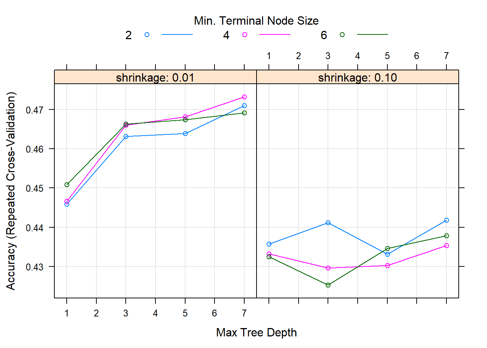
It doesn’t look like the boosted tree model performs any better. It may be that no information in the predictors strongly correlates with the season.
But let’s not give up yet, we’ll try a bit more. Let’s see if pre-processing helps.
Here, we’ll fit another random forest model but now use centering and scaling for the predictors.
# copy the random forest code from above. Add a statement to the train() function that centers and scales predictors.
set.seed(1111) #makes each code block reproducible
tuning_grid <- expand.grid( .mtry = seq(1,7,by=1), .splitrule = "gini", .min.node.size = seq(2,8,by=1) )
fit4 = caret::train(season ~ ., data=data_train1, method="ranger", trControl = fitControl, tuneGrid = tuning_grid, na.action = na.pass,
preProcess=c("center","scale"))
# save the result as fit4. plot model results.
plot(fit4)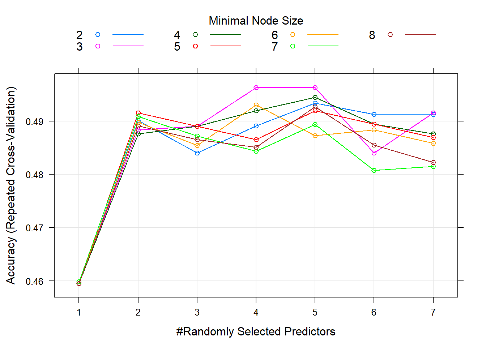
It doesn’t look like it helped a lot.
Ok, let’s try one more. Since the trees don’t seem to work too well, and a logistic model doesn’t work for multiple categorical outcomes, let’s use another model that can do that, namely a discriminant analysis. We’ve already seen one of those previously. Let’s pick a different one. The caret package website lists a lot of algorithms. I don’t know how exactly they all differ. Let’s try the one called penalized discriminant analysis (pda) (penalized is another way of saying regularized, and we learned that regularization might sometimes help.)
#write code that trains a pda model, use tuneLength 20. Save as fit5 and plot.
pda_Grid <- expand.grid(lambda=seq(1,10, by=1))
fit5 = caret::train(season ~ ., data=data_train1, method="pda", trControl = fitControl, tuneGrid = pda_Grid)
plot(fit5)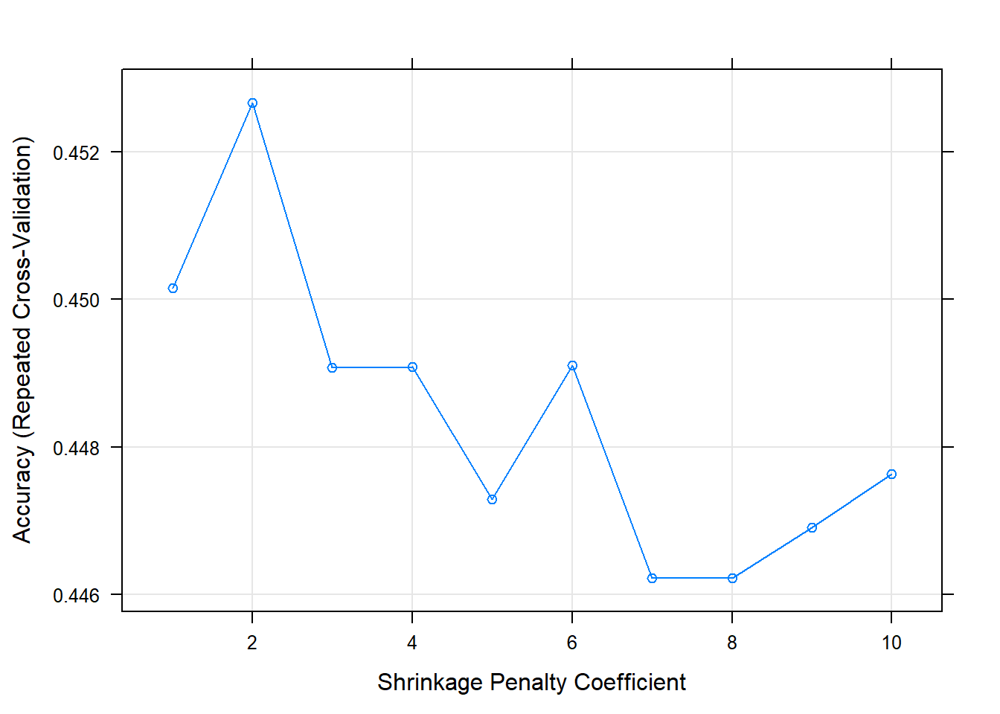
Ok, that doesn’t look very good either. Alright, enough models, there just doesn’t seem to be much information in the data that could help predict season. So let’s start to wrap up.
To recap: After we removed the obvious predictors, we fitted 1 tree, 1 random forest, 1 gradient boosted tree, 1 random forest with processed predictors, and 1 discriminant analysis. Let’s compare the performance.
resamps <- resamples(list(tree = fit1,
RF1 = fit2,
GBM = fit3,
RF2 = fit4,
PDA = fit5))
bwplot(resamps)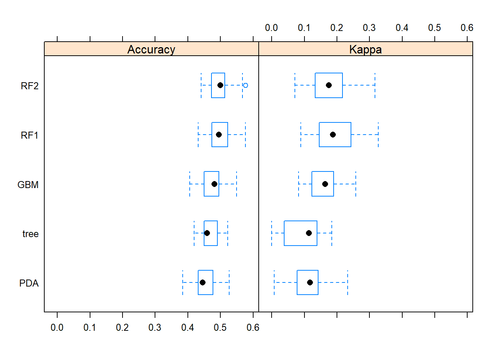
This plot suggests that while none of the models are great, the random forest ones seem overall slightly better.
Even though we didn’t really have any good model, and thus further evaluating it seems, in some sense pointless, for this exercise we’ll look at our “best” model anyway. We’ll declare the 1st random forest model (saved as fit2) to be the best.
Model uncertainty in the predictions is shown in the previous plot.
For categorical outcomes, we can’t plot residuals. But we can look at the final “2x2” (in this case, a 4x4) table (the confusion matrix) and compare true versus predicted outcomes and see if it shows any pattern.
#Write code to get model predictions for the outcome on the training data.
pred<-predict(fit4, data_train1)
#use predicted and actual outcomes, make a table and compute accuracy.
table(pred, data_train1$season)##
## pred Fall Spring Summer Winter
## Fall 78 4 3 1
## Spring 0 105 1 0
## Summer 0 0 61 0
## Winter 16 24 8 254## [1] 0.8972973You should see that the model gets a lot right (high numbers on the diagonal), but predicts winter more often than it should (last row). Accuracy in the training data is pretty good.
But we know that performance on the training set is not that meaningful, especially with a complex model we always get fairly good performance on the data used to build the model. What matters is how it performs on new data, so let’s check that. We can look at the same for the test set, which is a better estimate of the true performance.
#copy and paste the code from above, but now do it for the test set.
pred_test<-predict(fit4, data_test1)
table(pred_test, data_test1$season)##
## pred_test Fall Spring Summer Winter
## Fall 12 6 5 10
## Spring 4 6 6 7
## Summer 2 1 3 4
## Winter 23 41 16 94## [1] 0.4791667Here, the confusion matrix doesn’t look good at all. Off-diagonal entries are larger than diagonal, accuracy is about as good as a null model, and agrees with the cross-validated results. That last point is good, that means our cross-validation routine properly estimates the performance of “new” data. Of course, even this estimate on test data is a bit optimistic, since real new data is usually collected under slightly different circumstances and with different protocols, making it more likely that model performance is reduced.
# shut down the parallel computing cluster we created at the beginning of the analysis
stopCluster(cl)Overall, this suggests there is just no “signal” in the variables we are trying to use to predict the outcome, and the model fits to “noise” - thus doing ok on training data but failing on the test/cross-validated performance evaluation.
We can conclude that this is an analysis where we walk away “empty handed”. If this were a real analysis and you had data and did a ‘let’s see if something is going on’ analysis, this would be somewhat disappointing. If you had a specific, plausible hypothesis before you started your analysis (e.g., that outbreak size is correlated with season), finding that your biologically reasonable hypothesis doesn’t seem to be right is useful. Unfortunately, null results are still hard to publish.
Note that we didn’t use p-values here, but I bet we would have found several that are statistically significant when evaluated on the training data (as they usually are). But they would be meaningless and essentially “fitting the noise”. I contend that a lot of what’s published out there is exactly that, spurious p-values because models are evaluated on the training data.
Above, I kept search grids relatively small and specified other things (e.g., number of trees) to make sure things run reasonably fast. For a real project, I would make my searches and tuning more exhaustive, which might mean waiting a few hours for the code to run. If you want to, try to increase the search space or try different models to see if you can get a better performing model. It doesn’t seem to me that the data has any meaningful signal that would lead to a great model with much-improved performance. But you are welcome to see if you can find a model that performs better. If you do get a model that performs well (>0.6 accuracy), let me know. I’d be curious to see it.